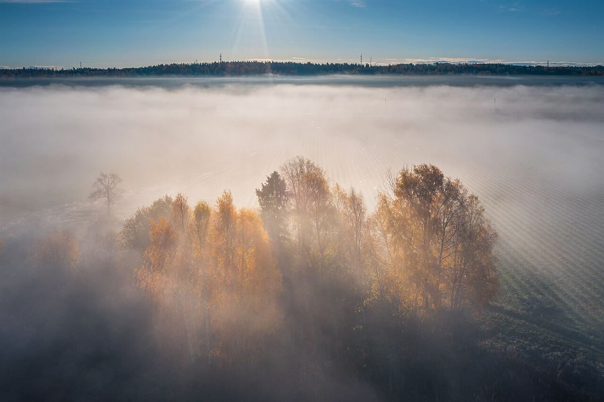
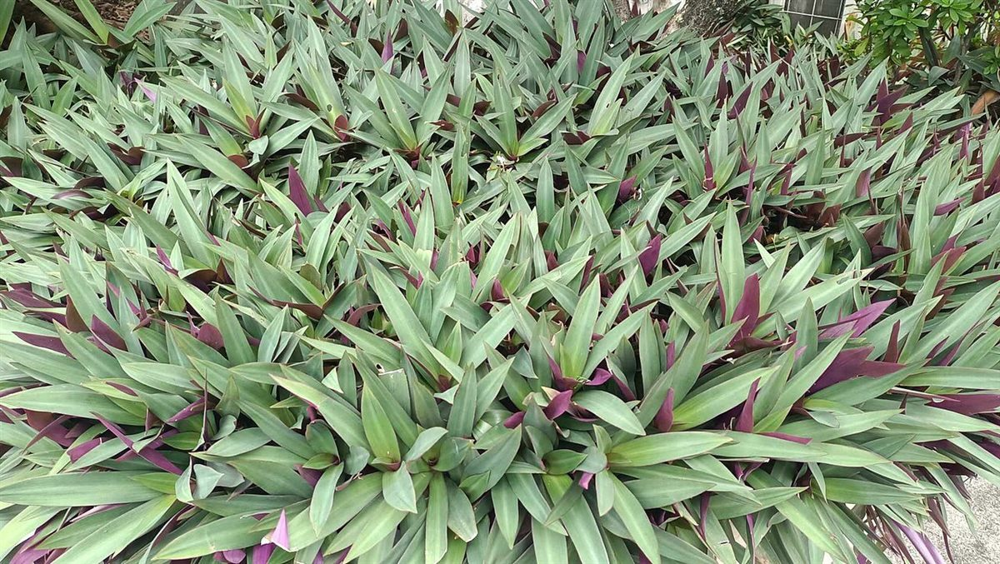

A / 100%
treeカフェ / 岡山県津山市

B / 18%
岡山県津山市にあるカフェ「tree」のご案内ページです。営業時間やメニューなど詳しいことは準備中。電話とInstagramで確認できます。
D / 12%
制作側の連想
「tree」から、面積で木を見る
屋号の「tree」から、制作側は「ツリーマップ」を連想しました。木のような階層を、入れ子の四角形の面積で表す図です。そこでこのサイトは、ページ全体を大小の四角い区画(タイル)で敷き詰めています。制作側の連想で、お店の理念・由来とは無関係です。


E / 6%
木の形を、四角の大きさで読む。



F
ここから先は、確認できているお店の情報です。
住所
所在地
〒708-0806
岡山県津山市大田85-5
時間
営業時間
準備中
休み
定休日
準備中
予約
ご予約
準備中
車
駐車場
準備中